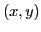
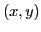

Next: Infinitesimals Up: Differentials Previous: Introduction Contents Index
If  is the derivative of
is the derivative of  for a particular value
of
for a particular value
of  , and is an arbitrarily chosen9.1
increment of
, and is an arbitrarily chosen9.1
increment of  , then the differential of
, then the differential of  , denoted
by the symbol , is defined by the equation
, denoted
by the symbol , is defined by the equation
On account of the position
which the derivative  here occupies, it is sometimes called
the differential coefficient. The student should observe the
important fact that, since
here occupies, it is sometimes called
the differential coefficient. The student should observe the
important fact that, since  may be given any arbitrary value
whatever,
may be given any arbitrary value
whatever,  is independent of
is independent of  . Hence,
. Hence,  is a function
of two independent variables
is a function
of two independent variables  and
and  .
.
Let us illustrate what this means geometrically.
Let  be the derivative of
be the derivative of  at P. Take , then
at P. Take , then
This gives the following interpretation of the derivative as a fraction.
If an arbitrarily chosen increment of the independent
variable  for a point  on the curve
for a point  on the curve  be
denoted by
be
denoted by  , then in the derivative
, then in the derivative
david joyner 2008-08-11